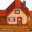

Template:Mainmenu
Jump to navigation
Jump to search
Description
This template is used to insert a table for the main menu.
Use
This template can be used by entering the following onto a relevant page.
{{Mainmenu}}
| Basics | The Farm | Environment | Gameplay |
|---|---|---|---|
|
 Farmhouse |
|||
| Items | |||
| The Valley | Beyond the Valley | ||